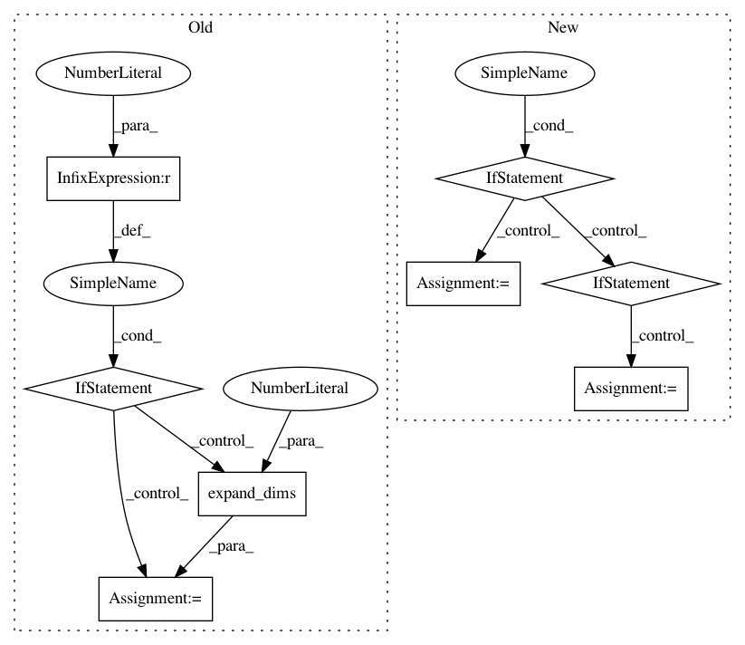

d55bad55b6a9e97f800c97c73038bc5ed8d4b31f,arviz/data/io_pystan.py,PyStanConverter,prior_to_xarray,#PyStanConverter#,201
Before Change
if len(values.shape) == 0:
values = np.atleast_2d(values)
elif len(values.shape) == 1:
if nchain == 1:
values = np.expand_dims(values, -1)
else:
values = np.expand_dims(values, 0)
values = np.swapaxes(values, 0, 1)
data[key] = values
return dict_to_dataset(data, library=self.pystan, coords=self.coords, dims=self.dims)
After Change
prior = self.prior
// filter posterior_predictive and log_likelihood
prior_predictive = self.prior_predictive
if prior_predictive is None:
prior_predictive = []
elif isinstance(prior_predictive, str):
prior_predictive = [prior_predictive]
ignore = prior_predictive + ["lp__"]
data = get_draws(prior, ignore=ignore)
return dict_to_dataset(data, library=self.pystan, coords=self.coords, dims=self.dims)
In pattern: SUPERPATTERN
Frequency: 3
Non-data size: 8
Instances
Project Name: arviz-devs/arviz
Commit Name: d55bad55b6a9e97f800c97c73038bc5ed8d4b31f
Time: 2018-11-03
Author: ahartikainen@users.noreply.github.com
File Name: arviz/data/io_pystan.py
Class Name: PyStanConverter
Method Name: prior_to_xarray
Project Name: AIRLab-POLIMI/mushroom
Commit Name: 1a2462f18707e04f294224053473668820111cf5
Time: 2017-07-23
Author: carlo.deramo@gmail.com
File Name: PyPi/approximators/regressor.py
Class Name: Regressor
Method Name: predict
Project Name: AIRLab-POLIMI/mushroom
Commit Name: 1a2462f18707e04f294224053473668820111cf5
Time: 2017-07-23
Author: carlo.deramo@gmail.com
File Name: PyPi/approximators/regressor.py
Class Name: Regressor
Method Name: fit